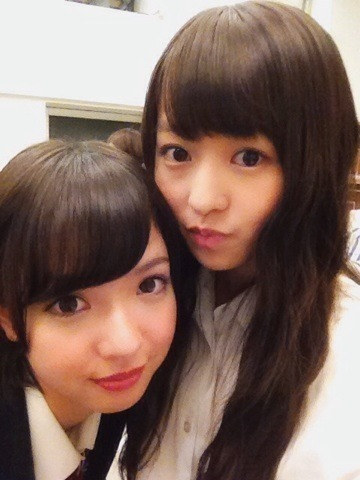

| 2013/10 11 Fri | 歯ぁあ！503回目 |
ヨーグルト白い
おにぎり白い
サンドイッチ白い
パンも白い
今日は白いものを
よく食べた気がする

まあやまりか

真夏の全国ツアー
代々木ファイナル！
についてお話しします。
今回は一期生も二期生も
ほとんど一緒にライブができました！
世界で一番孤独なLoverは
スペシャルな演出がたっぷり！
instの効果音ダンスは初挑戦でした。
火が出るのもかっこよかった。
他の星からは
センターステージを使ってダンス。
すごい高さまで上がって踊ったので、
2階席のお客さんも
しっかり見れました。
ユニット曲できて嬉しかったな。
煽りの曲が多かったのですが
会場全体に長い花道があって
お客さんの近くまで行くことが
できました。
顔もよく見えたし、
団扇や推しタオルを
見つけたときは感動しました。
ありがとう
シャキイズムでは団扇で遊んだり
サインボール投げたり！
私のキャッチした方いるかなー？
君の名は希望では
いくちゃんのピアノと
ストリングスの方々が演奏するという
豪華なステージでした。
あとは、ライブなのになぜか
運動会もしたり...
ひたすら動いてたなあ。
私は桜井チームで昼夜負けたけど笑
3回戦のリレーでは
真夏のハンデつけてもらったのに
負けたのがいちばんの衝撃だった笑
お客さんでいっぱいになった
代々木のあの景色を
私たちが独占できたことが
本当に幸せでした。
ありがとうございました！

のーぎのぎっ♪
次は武道館ということで...
代々木が終わったからといって
気を抜いていられません！
7th制作も着々と進んでいます。
前回のブログのコメント
ありがとうございました！
私らしく頑張ります。
今日はある撮影をしました。
幸せでした。
こういうこと
たくさんできたらいいな。
それでたくさんの方に見てほしい。
完成が楽しみ楽しみ
あと、こないだ新制服着ました！
かわいいいかった！よ！

生写真でロリータ着て
テンション上がった
まりか
コメント(385)
2013/10/11 22:48